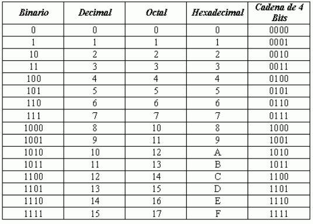

Nuestro conversor
Conversor-online es una herramienta online gratitua que te permitirá hacer el cambio de base de un sistema de numeración a otro. Este te proporcionará la operatividad de tu conversión paso a paso para facilitar tu comprensión.
Sistema de numeración decimal.
El sistema decimal conocido comúnmente, usa un conjunto de símbolos cuyo
significado depende de su posición relativa al punto decimal, que en caso de
ausencia se supone colocado implícitamente a la derecha.
El sistema numérico decimal, basado en diez símbolos (0, 1, 2, 3, 4, 5, 6, 7, 8, 9),
que, al combinarlos, permiten representar las cantidades imaginadas, es por esto
por lo que se dice que utiliza la base 10.
Sistema de numeración binario.
El sistema binario o sistema de base 2 es un sistema numérico que utiliza solo dos
números: 0 y 1. Las computadoras operan en un sistema binario, lo que significa
que pueden almacenar datos y realizar cálculos. El término también se utiliza para
referirse a cualquier sistema de codificación y decodificación digital en el que existen
exactamente dos estados posibles.
Sistema de numeración octal.
Es un sistema de numeración de base 8 que usa 8 símbolos para representar
cantidades. Los símbolos utilizados son: 0, 1, 2, 3, 4, 5, 6, 7. Este sistema también
posicional, ya que cada una de sus cifras tiene como posición la relativa al punto
decimal que, en caso de no aparecer se supone implícita al lado derecho del
número, este proporciona un método conveniente para la representación de códigos
y números binarios usados en los sistemas digitales.
Sistema de numeración hexadecimal.
El sistema hexadecimal emplea la base 16. Este tiene 16 posibles símbolos
digitales. Utiliza los dígitos del 0 al 9, más las letras A, B, C, D, E y F como sus 16
símbolos digitales. Es importante recordar que los dígitos hexadecimales de A a la
F son equivalentes a los valores decimales de 10 a 15.
Tabla comparativa de numeros binarios, decimales, octales y
hexadecimal.
